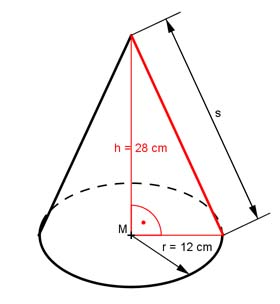

Aufgabe 186 Ein Kegel hat eine Höhe h von 28 cm und einen Grundkreisradius r von 12 cm. Wie groß ist seine Oberfläche O?  Satz von Pythagoras im roten Dreieck: s² = h² + 12² cm² s² = 28² cm² + 12² cm² s² = 784 cm² + 144 cm² = 928 cm² |√ s = 30,5 cm Oberfläche O = Grundfläche G + Mantelfläche M O = G + M O = л * r² + л * r * s O = л * 12² cm² + л * 12 cm * 30,5 cm O = 452,16 cm² + 1 149,24 cm² = 1 601,4 cm²